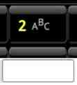

Letters & Numbers

Slide/swipe at different directions to get the different letters.
Example:
- In key "2ABC" slide left to get A.
- In key "2ABC" slide up to get B.
- In key "2ABC" slide right to get C.
- In key "2ABC" just click to get 2.
Alternative symbols
Press and hold a key to get international characters (tildes, etc).
Slide ALT/shift key up to get uppercase keyboard.
Slide ALT/shift key left to get symbols keyboard.
Slide ALT/shift key down to get lowercase keyboard.
Other features
- Press and hold enter/search key to display settings menu.